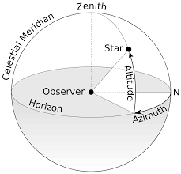

<a href="http://www.merriam-webster.com/dictionary/azimuth" target="_blank">azimuth</a> - an arc of the horizon measured between a fixed point (as true north) and the vertical circle passing through the center of an object 
 usually in astronomy and navigation clockwise from the north point through 360 degrees.
<br> 


